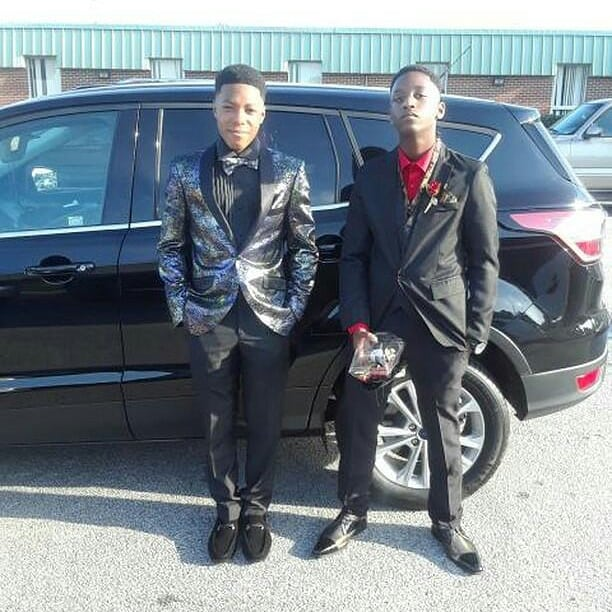

My name is Elliot Anthony Ford, I am a first year scholar at smash academy. I was born in Milwaukee and moved to Georgia in 2015 (I think). My hoobie is making beats which I discovered in in the 7th grade. I've been to 5 schools 2 of them were in georgia and they were North Clayton Middle School and the World Famous Mundy's Mill.
I can see myself being a mechanical engineer or working for the National Guard full time. I got the idea because I feel like with my good problem solving skills and gaining more knowledge on physics and mechanics I feel like I can be a great engineer. For one of my dreams I wished that would happen is the company I wanted to make with my friends. This company will have a music team that makes trap and r&b, while one team will be making anime and games and hoodies. (I won't tell yall the name so you guys don't steal)
